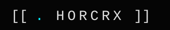
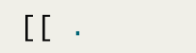

primary logos · HORCRX
mark · dark
favicon · avatar · solo

lockup · dark
primary product use

mark · light
on warm paper
construction
brackets
the vessel · containment · structure
·
period
the essence · soul fragment · the live thing inside
missing U
the self extracted · the container that used to hold
you
inline glyphs · text use
[ · ]
core mark
HORCRX
wordmark
[ · ] HORCRX
lockup
horcrux #001
instance ref
→
direction
·
separator
—
em dash
lineage
ATLAS
→
HORCRX
·
the body, then the protocol